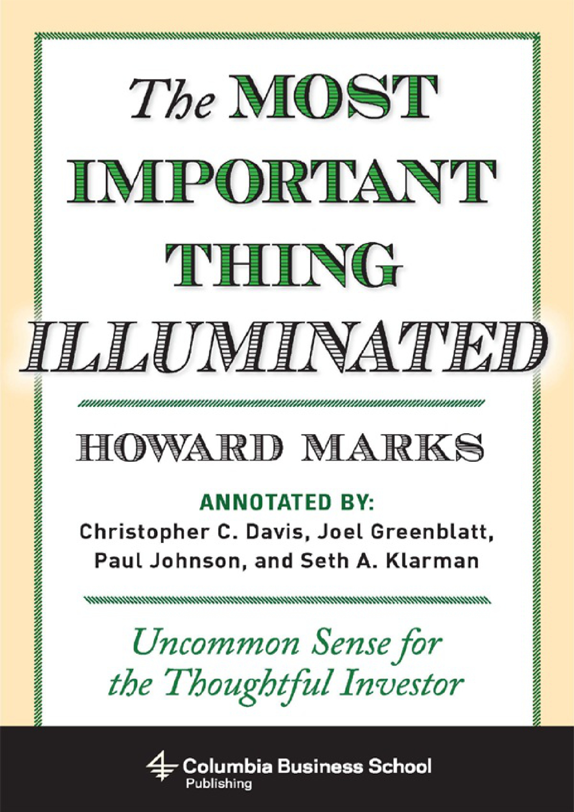

By Howard Marks · 2013 · 238 pages

Howard Marks cofounded Oaktree Capital Management in 1995 and has been writing his famous memos to clients for over twenty years. The book grew out of a July 2003 memo titled "The Most Important Thing" that listed eighteen separate "most important things" for investing. The paradox is intentional: successful investing requires attending to many dimensions simultaneously, and omitting any one produces inferior results. There is no single magic bullet, no formula, no algorithm. Investing is more art than science.
This is a statement of investment philosophy, not a how-to manual. There are no step-by-step valuation formulas or mathematical constants. The focus is on what Marks calls "the human side of investing" — how to think, how to deal with psychological influences, how to recognize where you stand in the cycle. The book doesn't simplify investing. It clarifies just how complex investing really is.
"Heaven for me would be seven little words: 'I never thought of it that way.'" — Howard Marks
Marks spends more time on risk than on returns. Risk is the most interesting, challenging, and essential aspect of investing. Paul Johnson, one of the four annotators, calls the book's risk discussion "the first comprehensive discussion of risk and its importance in the investment process that I have read." The other annotators — Christopher Davis, Joel Greenblatt, and Seth Klarman — bring decades of their own experience, creating what Bruce Greenwald describes as "a surrogate book group with five of the best investment thinkers alive."
Marks's philosophy was forged through direct experience of crisis after crisis: the Arab oil embargo, stagflation, and the Nifty Fifty collapse in the 1970s; Black Monday in 1987 when the Dow fell 22.6% in a single day; the emerging market crisis and Long-Term Capital Management meltdown of 1998; the tech bubble burst of 2000; and the global financial crisis of 2007–2008. By the 1990s, most professionals who started in the 1960s–70s had left the industry, and those who joined in the 1980s–90s had never seen a market decline exceed 5%. They anticipated double-digit annual returns while being completely blind to risk.
"Experience is what you got when you didn't get what you wanted." — Howard Marks
Three writers shaped Marks's thinking above all others: Charley Ellis and his essay "The Loser's Game," John Kenneth Galbraith's A Short History of Financial Euphoria, and Nassim Nicholas Taleb's Fooled by Randomness. Direct mentorship from Warren Buffett, Charlie Munger, and Michael Milken provided the practical counterweight. But philosophy alone would have meant nothing without skilled implementation by Oaktree cofounders Bruce Karsh, Sheldon Stone, and others.
The single most important requirement for investment success is not analytical skill or access to information. It is the ability to think at what Marks calls the second level. First-level thinking is simplistic and superficial: "It's a good company; let's buy the stock." Second- level thinking is deep, complex, and convoluted: "It's a good company, but everyone thinks it's a great company, and it's not. So the stock is overrated and overpriced; let's sell." The distinction is everything.
Anyone can achieve average investment performance by buying an index fund. The goal of active investing is to beat the market, and since millions of participants compete for every available dollar of gain, the person who captures it must be a step ahead. Being right is necessary but not sufficient. You must be more right than others, which means your thinking must be different from the consensus.
"It's not supposed to be easy. Anyone who finds it easy is stupid." — Charlie Munger
Consider the difference in practice. A first- level thinker sees a poor economic outlook and dumps stocks. A second-level thinker sees the same outlook, recognizes that everyone else is selling in panic, and buys. A first-level thinker expects earnings to fall and sells. A second-level thinker expects earnings to fall less than people expect and buys, anticipating a pleasant surprise. The first-level thinker needs only an opinion about the future. The second-level thinker must consider the range of likely outcomes, which outcome is most probable, what the consensus thinks, how his expectation differs from the consensus, how the current price reflects those views, and what happens under various scenarios.
Second-level thinking requires intuition and adaptiveness, not rigid formulas. No rule works all the time because the environment cannot be controlled. Psychology plays a massive and highly variable role. And if others emulate a successful approach, that emulation blunts its effectiveness. Very few people possess the superior insight, intuition, sense of value, and awareness of psychology needed for consistently above-average results.
Marks notes that even the greatest investors have batting averages well below 1.000. Judgments that prove correct don't necessarily do so promptly. If looking wrong for extended periods is intolerable, the investor should try another field. The willingness to appear wrong while the market moves from misvalued to more misvalued is a prerequisite for eventual success.
Marks's own philosophy was not born fully formed. It is the sum of many ideas accumulated over a long career. His undergraduate education at Wharton was practical and pre- theoretical. His graduate work at the University of Chicago was quantitative and steeped in efficient market theory. He had to reconcile and synthesize these two schools, and the process of doing so — combined with living through the Arab oil embargo, stagflation, the Nifty Fifty collapse, Black Monday, the 1998 emerging market crisis, the tech bubble, and the 2008 financial crisis — forged a philosophy grounded in humility. As he puts it, "experience is what you got when you didn't get what you wanted."
"Beating the market matters, but limiting risk matters just as much." — Seth Klarman
The competitive dynamics are relentless. Everyone wants to make money. All of economics rests on the universality of the profit motive. With millions of intelligent, motivated participants chasing the same gains, the only way to consistently capture more than your share is through a quality of perception that others lack. This is what second-level thinking provides: not just being right, but being right in a way that produces a portfolio different from the consensus portfolio.
First-level thinking looks for easy answers and simple formulas. Second-level thinking recognizes that the relationship between what you know and what everyone else knows determines whether your insight translates into profit. In a zero-sum game after costs, there is no room for merely adequate thinking. Only the uncommon can produce uncommon results.
The efficient market hypothesis emerged from the University of Chicago in the 1960s and brought with it a constellation of ideas: risk aversion, volatility as the proxy for risk, alpha, beta, the random walk, and the impossibility of consistently beating the market. The theory holds that because many participants share roughly equal access to information, prices fully and immediately reflect all available data, leaving no exploitable mispricings.
Marks does not reject market efficiency outright. Instead, he treats it as what lawyers call a rebuttable presumption: assume it's true until you can prove otherwise. Before buying anything that looks like a bargain, ask five questions. Why should this bargain exist when thousands of willing buyers are looking? If the return seems generous relative to the risk, might there be hidden risks you've overlooked? Why would the seller part with this asset at a price that delivers you an excessive return? Do you truly know more about this asset than the seller does? And if it's such a great deal, why hasn't someone else already snapped it up?
"In theory there's no difference between theory and practice, but in practice there is." — Yogi Berra
The word "efficient" is misleading. It means speedy — quick to incorporate information — not correct. Yahoo traded at $237 in January 2000 and at $11 fifteen months later. Both prices cannot have been right. Markets reflect consensus views quickly, but consensus views are often wrong. If you share those consensus views, you'll earn consensus returns. To beat the market, you need nonconsensus views that turn out to be correct.
The assumptions underlying the efficient market hypothesis are themselves flawed. Investors are not clinical machines — they are driven by greed, fear, and envy. Most professionals are assigned to particular niches, creating blind spots. Only a tiny percentage sell short, eliminating half the potential corrective mechanism. Markets fall on a spectrum of efficiency rather than being binary. Foreign exchange markets, tracked by millions of analysts, are extremely efficient. But less followed asset classes — small-cap stocks, distressed debt, emerging markets — contain persistent inefficiencies.
Inefficiency does not guarantee profit. It merely means mispricings exist, creating the possibility of winners and losers. The old poker adage applies: "If you've played for forty-five minutes and haven't figured out who the fish is, then it's you." For superior returns, two conditions must be met: inefficiencies must exist in the market, and the investor must be more insightful than other participants. Without both, above-average performance is a matter of luck.
Marks's practical relationship with efficiency theory is nuanced. He respects its core insight — that consistently beating the market is genuinely difficult and that most who try will fail — while rejecting its extreme conclusion that no one can ever succeed. The theory's greatest contribution is intellectual humility: it forces investors to ask whether their perceived edge is real or illusory. Its greatest danger is intellectual paralysis: the belief that effort is futile and that all prices are always correct.
The practical conclusion is counterintuitive: let others believe markets can't be beaten. Their abstention reduces competition and creates opportunities for those willing to do the work. Market efficiency is a useful concept for maintaining humility, but elevating it to dogma is a mistake.
For investors who decide the effort is worthwhile, the prescription is clear: look for inefficiency in less-followed, less-understood, and less-respected corners of the market. Concentrate energy where the possibility of mispricing is greatest and where the competition from other skilled analysts is weakest. And always remember that the burden of proof rests on the investor: you must demonstrate that you have an edge, not merely assume it.
The oldest rule in investing — "buy low, sell high" — is meaningless without a framework for determining what "low" and "high" mean relative to intrinsic value. Without an estimate of intrinsic value, an investor is just guessing. As Warren Buffett has said, the best investment course would teach just two things well: how to value an investment and how to think about market price movements.
There are two fundamental approaches. Value investors estimate what a business is worth today based on tangible factors — financial resources, management quality, factories, patents, brand names, and above all, the ability to generate earnings and cash flow — and buy when the price is below that estimate. Growth investors try to find companies whose value will increase rapidly in the future. The distinction is between value today and value tomorrow, between what can be measured and what must be predicted.
"If you do a good job valuing a stock, I guarantee that the market will agree with you. I just don't tell them when." — Joel Greenblatt
Growth investing has produced some spectacular winners, but it demands accurate predictions about a fundamentally unknowable future. The Nifty Fifty disaster of the early 1970s is the cautionary tale. First National City Bank built a portfolio of America's brightest companies — IBM, Xerox, Kodak, Polaroid, Merck, Coca-Cola — buying them at any price because their growth seemed assured. Price-to-earnings ratios hit 80 to 90 against a postwar average in the mid-teens. Within a few years, those P/Es collapsed to 8 or 9, and investors lost 90% of their capital in some of America's finest companies. Kodak and Polaroid were eventually undone by technological change that no one in 1968 could have foreseen.
Value investing offers more consistent results with less drama. Marks's preference is clear: "consistency trumps drama." But value investing has its own challenge. It depends entirely on the accuracy of your value estimate. Without a correct estimate, you're as likely to overpay as to underpay. And even when your estimate is right, you must hold your view firmly through periods when the market disagrees — sometimes violently.
Consider buying a stock at 60 when you believe its intrinsic value is 80. The price drops to 50. Then to 40. At each step, the market is telling you that you're wrong. Most investors begin to wonder if perhaps they are. This doubt is the enemy. "Being too far ahead of your time is indistinguishable from being wrong." Without knowledge of fundamentals, investors cannot possess the resolve needed to act correctly when every signal suggests they should abandon ship.
"An accurate opinion on valuation, loosely held, will be of limited help. An incorrect opinion on valuation, strongly held, is far worse." — Howard Marks
The psychology of price movements runs exactly opposite to what you'd expect. In normal commerce, people buy more of something when the price falls. In investing, the demand curve is inverted: people love assets more as prices rise, feeling validated, and love them less as prices fall, beginning to doubt. If you liked something at 60, rational analysis says you should like it more at 50 and much more at 40. But human nature says the opposite. Eventually, investors convince themselves to sell before it reaches zero, and that panic-driven capitulation is precisely what creates market bottoms.
The distinction between value and growth carries a temporal dimension that has profound implications. Value investing emphasizes current-day considerations — what the business is worth right now based on measurable attributes. Growth investing bets on what will happen tomorrow, requiring predictions about the pace and durability of change over decades. The value investor's task, while difficult, is at least grounded in observable reality. The growth investor's task requires a crystal ball. As Marks observes, it is far harder to predict the future than to assess the present.
Three requirements emerge for value investing success. First, have a view on intrinsic value. Second, hold that view strongly enough to buy even as declining prices suggest you're wrong. Third, be right. The last requirement is what separates good intentions from good results. Give most investors truth serum and they will admit their real approach is "I look for things that will go up." Serious profit pursuit must be grounded in a fundamentally derived estimate of intrinsic value — the essential foundation for steady, unemotional, and potentially profitable investing.
Investment success doesn't come from "buying good things" but from "buying things well." The distinction is subtle but critical. Even the best company becomes a bad investment at too high a price, and a deeply troubled company can be a great investment if bought cheaply enough. There is no asset class with a birthright of high returns. The only thing that makes an investment attractive is an adequate relationship between price and value.
"No matter how good an investment sounds, if price has not yet been considered, you can't know if it is a good investment." — Joel Greenblatt
The Nifty Fifty disaster illustrates this perfectly. Investors who bought America's best companies at P/E ratios of 80–90 lost 90% of their capital. The companies were genuinely great. The prices were genuinely insane. Oaktree's philosophy distills to four words: "well bought is half sold." If you buy cheap enough, the question of when and how to exit largely answers itself.
Beyond intrinsic value, price is driven by psychology and technicals. Forced selling during crashes, when leveraged investors receive margin calls, pushes prices far below fundamental value. Cash inflows to mutual funds force portfolio managers to buy regardless of price. These nonfundamental factors create the mispricings that value investors exploit. Many of Oaktree's best purchases have come from forced sellers — and being a forced seller yourself is the worst position in investing.
Investor psychology can cause a security to trade anywhere in the short run, regardless of fundamentals. Investing is a popularity contest, and the most dangerous thing is buying at the peak of popularity. At that point, all favorable facts are already priced in, and there are no new buyers left to push the price higher. Conversely, the safest and most profitable thing is to buy what nobody likes. Given time, its popularity and price can only go one way: up.
Bubbles represent the complete abandonment of the price-value relationship. All bubbles start with a nugget of truth — tulips are beautiful and rare, the Internet will change the world, real estate keeps up with inflation — but then a few clever investors profit, others notice, more pile in, prices rise, and rising prices attract still more buyers who care less and less about whether the price is fair. The greater fool theory works until it doesn't, and then valuation reasserts itself with devastating force.
"The market can remain irrational longer than you can remain solvent." — John Maynard Keynes
Marks identifies four routes to investment profit. First, benefiting from a rise in intrinsic value — hard to predict and usually priced in. Second, applying leverage — which magnifies gains and losses equally and introduces the risk of ruin. Third, selling for more than your asset is worth — the greater fool approach. Fourth, buying something for less than its value — the most dependable way to make money. It doesn't require luck or the arrival of a greater fool. It only requires that other market participants eventually recognize reality, and when markets function properly, value exerts a magnetic pull on price.
The housing bubble of 2004–2006 and the tech bubble before it demonstrate how completely investors can abandon the price-value framework. In both cases, genuine truths — the Internet really was transformative, homes really did provide inflation protection — were stretched into justifications for paying any price. Once "attractive" morphed into "attractive at any price," the seeds of catastrophe were planted. The positives behind these investments were real, but paying too much for real positives still produces real losses.
Even buying cheap isn't infallible. You can be wrong about current value. Events can reduce value. Deteriorating attitudes can push prices still further below value. And convergence can take longer than your time horizon allows. But among all available approaches, buying below value remains the best chance investors have.
Investing consists of exactly one thing: dealing with the future. Since no one can know the future with certainty, risk is inescapable. Risk is not just an element of investing — it is the essential element. Unlikely to succeed over the long term without dealing with it explicitly, through a three-step process: understanding risk, recognizing when it's high, and controlling it.
"Risk means more things can happen than will happen." — Elroy Dimson
Academic finance defines risk precisely as volatility. Marks objects. Academics settled on volatility as a matter of convenience — it's a number that is objective and can be ascertained historically. But it's not the risk most investors actually care about. Nobody declines to make an investment because "its price might show big fluctuations." People decline because they're worried about permanent loss of capital or an unacceptably low return. Risk, at its core, is the likelihood of losing money.
But permanent capital loss is only one form of risk. Falling short of goals is risk — a pension fund that needs 8% returns but earns 6% has failed even without losing a dollar. Underperformance is risk — in 1999, Warren Buffett and Julian Robertson refused to participate in the tech bubble and were punished for their prudence. Career risk drives money managers to avoid unconventional positions that might get them fired. Illiquidity risk materializes when you need cash and cannot sell at a reasonable price. Different risks matter to different investors depending on their circumstances.
Risk cannot be measured objectively, even after the fact. A successful investment doesn't prove it wasn't risky; it may simply mean the risk didn't materialize. A losing investment doesn't prove it was risky; it may have been bad luck. Nassim Nicholas Taleb's concept of "alternative histories" is central: for every outcome that occurred, there were countless outcomes that could have occurred. Only over very large numbers of trials can probability estimates be validated. In the short run, outcomes are dominated by randomness.
Financial models compound the problem. Most assume returns follow a normal distribution, but financial behavior driven by emotion produces "fatter tails" — extreme events that occur far more frequently than the bell curve predicts. The failure to distinguish between a generic bell-shaped curve and the specific mathematical properties of a normal distribution contributed directly to the 2008 credit crisis.
"The riskiest things: The greatest risk doesn't come from low quality or high volatility. It comes from paying prices that are too high." — Howard Marks
Investment risk is largely invisible before the fact — except to those with unusual insight. Six factors create this invisibility: the future is unknowable; risk-bearing decisions are contemplated in normal patterns that occasionally produce something very different; people underestimate potential for change; "worst-case" projections often aren't negative enough; risk shows up lumpily and infrequently; and people overestimate their ability to gauge risk and understand new mechanisms. The rarest and most valuable investor skill is the ability to see risk that is hiding in plain sight.
Three reasons make risk assessment essential in any investment process. First, risk is a bad thing and most rational people want to avoid or minimize it — the underlying assumption of risk aversion that grounds all financial theory. Second, investment decisions should be a function of both risk and potential return: investors must be bribed with higher prospective returns to take on incremental risk, a process Marks calls equilibration. Third, when considering investment results, return means little by itself — was the return achieved in safe instruments or risky ones? Without a feeling for risk-adjusted return, raw performance numbers are meaningless.
The root cause of investment risk is excessive optimism combined with inadequate risk aversion. When investors believe too much, worry too little, and pay too much, they create the conditions for their own destruction. The paradox: risk tolerance is antithetical to successful investing. Only when investors demand compensation for bearing risk — in the form of reasonable prices and adequate risk premiums — are markets safe.
Great investing requires both generating returns and controlling risk, and the first step in controlling risk is recognizing it. Risk is not a property of assets themselves but of the prices paid for those assets. High-quality assets can be risky if overpriced, and low-quality assets can be safe if underpriced. Most investors wrongly equate quality with safety, and that fundamental confusion creates some of the best opportunities for those who understand the true source of risk.
"Paying too much is a great way to lose money regardless of other measures of risk, such as volatility or degree of diversification." — Joel Greenblatt
Risk recognition starts with understanding when investors are paying too little attention. In bull markets, risk tolerance rises, investors compete to put money to work, risk premiums shrink, and everyone repeats the mantra that "risk is my friend." The irony is devastating: the more people embrace risk, the more dangerous the market becomes. When confidence is universal, there is nothing to worry about except the universal confidence itself.
Marks uses the capital market line to illustrate the investment thought process. In a normal environment, the chain runs upward: 30-day T-bills at 4%, 10-year notes at 6%, single-A corporate bonds at 7%, high-yield bonds at 12%, stocks at 13%, with real estate, buyouts, and venture capital demanding still higher returns. But when the riskless rate falls to 1% and investors still want returns calibrated to a 4% base, the entire line compresses and flattens. Risk premiums shrink to historic lows. The market appears low-risk but is in fact high-risk.
By mid-2007, Oaktree's assessment was clear: skepticism, fear, and risk aversion were at historic lows. The slope of the risk/return line was "quite flat." No broad markets were underpriced or uncrowded. Trust had replaced skepticism, and eagerness had replaced reticence. When the Bear Stearns hedge funds collapsed, it should have surprised no one. The warning signs were all visible in the present — none of them required predicting the future.
"It's only when the tide goes out that you find out who's been swimming naked." — Warren Buffett
The perversity of risk is Marks's term for a deeply counterintuitive dynamic: when investors feel risk is low, their behavior creates dangerous conditions. As psychology strengthens, they demand less compensation for bearing risk, bid up asset prices, and lower prospective returns. The reward for taking incremental risk shrinks at precisely the moment more people rush to take it. Conversely, when investors believe risk is high, their caution widens risk premiums and reduces actual risk. Risk is highest when it feels lowest, and lowest when it feels highest.
The consensus error is pervasive. When everyone believes something is too hot to handle, their unwillingness to buy pushes the price down until it's actually quite safe. When everyone believes something carries no risk, they bid the price up until it's enormously risky. Investment risk resides most where it is least perceived.
Myron Scholes, the Nobel laureate whose own fund blew up in 1998, captured the paradox precisely: "My belief is that because the system is now more stable, we'll make it less stable through more leverage, more risk taking." Investors who believe quality determines risk commit a fundamental error. High-quality assets can be enormously risky if overpriced, and low- quality assets can be quite safe if bought cheaply. Joel Greenblatt calls this confusion "the fundamental flaw" in most investors' processes. It is the gap between perceived risk and actual risk that creates both the worst losses and the best opportunities.
In 2005–2007, the consensus narratives about risk elimination were seductive: central bank management had smoothed economic cycles, globalization had spread risk geographically, securitization and syndication had distributed risk, tranching had allocated risk to those best able to bear it, and computers had made markets better understood. Every one of these narratives proved false. Risk cannot be eliminated. It can only be transferred, spread, and — when people stop worrying about it — magnified.
Outstanding investors are distinguished as much by their risk control as by their return generation. Warren Buffett, Peter Lynch, Bill Miller, and Julian Robertson built remarkable records not through occasional spectacular gains but through decades of consistency and the absence of disasters. High absolute returns with high risk mean nothing — what matters is the ratio of return to risk sustained over time.
"When you boil it all down, it's the investor's job to intelligently bear risk for profit. Doing it well is what separates the best from the rest." — Howard Marks
Risk is invisible in good times, which is precisely why risk control receives no recognition when it matters most. A well-constructed portfolio and a recklessly constructed portfolio may produce identical returns in a rising market. The difference becomes apparent only when the market falls — and by then it's too late. The analogy is to a builder: a good builder avoids construction flaws, a poor builder incorporates them, but without an earthquake, you can't tell the difference. The earthquake always comes eventually.
There are two views of how investors add value. The traditional view: a manager takes the same risk as a benchmark and earns a superior return. The alternative and better view: a manager achieves the same return as the benchmark while taking less risk. The second approach is underappreciated because risk reduction is invisible in good years. Like insurance, its cost — the return forgone — seems excessive until the house burns down.
The critical distinction is between risk control and risk avoidance. Risk avoidance means refusing to bear any risk, which assures you of returns no higher than the risk-free rate. Risk control means bearing risk intelligently, the way a life insurance company does: aware of the risks, employing skilled professionals to analyze them, diversifying appropriately, and investing only when convinced that prospective returns far exceed the required risk compensation. Oaktree's first tenet stresses the importance of risk control, not risk avoidance.
"The math behind the compounding of negative returns helps ensure this outcome (e.g., a 40 percent loss in one year requires a return of 67 percent to fully recover)." — Joel Greenblatt
Complacency is the constant enemy. When extreme volatility doesn't show up for extended periods, investors start to believe it never will. They relax their rules, increase leverage, and take on risks they wouldn't have considered a few years earlier. Nassim Nicholas Taleb compares this to Russian roulette with a revolver containing thousands of chambers: after dozens of pulls without a bullet, you forget the bullet exists, "under a numbing false sense of security." The 2004–2007 period saw institutions playing what they thought was a low-risk game with assumptions on losses and volatility that proved catastrophically wrong.
The analogy to life insurance illuminates what intelligent risk-bearing looks like. Insurance companies accept risk they're aware of, employ doctors to assess applicants' health, diversify by mixing policyholders across age, gender, occupation, and geography, and set premiums high enough to profit if deaths occur at actuarial rates. They don't avoid risk — they bear it intelligently. Oaktree's approach mirrors this: be aware of the risks, employ skilled analysis, diversify appropriately, and invest only when convinced that the likely return far exceeds the required risk compensation. Risky assets can make for good investments if they're cheap enough. The essential element is knowing when that's the case.
The road to long-term success runs through risk control more than aggressiveness. Over a full career, most investors' results are determined more by how many losers they have and how bad those losers are than by the quality of their winners. Skillful risk control is the mark of the superior investor.
The worst-case scenario is itself a misnomer. Any "worst case" is merely the worst case anyone has imagined — reality can always produce something worse. The quants who built models for mortgage-backed securities assumed a nationwide decline in home prices couldn't happen, because it never had before. They confused the absence of a historical precedent with the impossibility of its occurrence. Black swans materialize precisely because people have stopped believing they can.
In a November 2001 memo called "You Can't Predict. You Can Prepare," Marks laid down two rules with unusual confidence. Rule number one: most things will prove to be cyclical. Rule number two: some of the greatest opportunities for gain and loss come when other people forget rule number one. Very few things in the world of investing move in a straight line. Progress and deterioration alternate. The underlying forces of rise and fall are perpetual.
"I think it's essential to remember that just about everything is cyclical. Cycles always prevail eventually. Nothing goes in one direction forever. Trees don't grow to the sky. Few things go to zero." — Howard Marks
Cycles exist because of human involvement. Mechanical processes can proceed in a straight line if adequately powered. Human-involved processes cannot, because people are emotional and inconsistent, not steady and clinical. When people feel good about the future, they spend more, save less, and borrow to increase their profit potential. All of this can reverse in a heartbeat. And cycles are self-correcting: the reversal doesn't require an exogenous shock. Trends create the conditions for their own undoing. Success carries within itself the seeds of failure, and failure the seeds of success.
The credit cycle is Marks's favorite because of its inevitability, extreme volatility, and ability to create opportunities. Small fluctuations in the economy produce large fluctuations in credit availability, which in turn have enormous impact on asset prices. In the prosperity phase, capital providers thrive, risk aversion disappears, competition drives down returns and credit standards, and institutions begin financing borrowers and projects not worthy of financing. As The Economist observed, "The worst loans are made at the best of times." Eventually, losses mount, lenders retrench, risk aversion rises, credit tightens, companies are starved of capital, and defaults cascade. Then the cycle reverses again.
Every decade, someone declares that cyclicality is dead. On November 15, 1996, the Wall Street Journal reported consensus that "the big, bad business cycle has been tamed." What followed: the 1998 crisis, the 2002 recession, and the 2008 financial crisis. Before the Great Depression, Myron E. Forbes predicted on January 1, 1928 that "there will be no interruption of our present prosperity." Herbert Hoover insisted on October 25, 1929 that the fundamental business of the country was "on a sound and prosperous basis." The four most dangerous words in investing: "this time it's different."
The credit cycle demonstrates the pattern with particular clarity. In the prosperity phase, capital providers thrive, risk aversion disappears, and competition drives lenders to lower standards, ease covenants, and finance borrowers unworthy of financing. At the extreme, investment occurs where the cost of capital exceeds the return on capital — capital destruction in its purest form. Then losses mount, lenders retrench, credit tightens, and companies starve. But because competition to make loans is now low, those who commit capital at the bottom can demand high returns with strong protections. The cycle is ready to reverse again.
Historical examples of loose credit bubbles litter the landscape: real estate in 1989–1992, emerging markets in 1994–1998, the Long-Term Capital Management collapse in 1998, venture capital and telecommunications in 2000–2001. As Marks quotes the movie Field of Dreams: "If you build it, they will come." In finance: if you offer cheap money, they will borrow, buy, and build — often without discipline, and always with consequences.
When things are going well, extrapolation introduces enormous risk. Company profitability, capital availability, price gains, and market liquidity are all bound to regress toward the mean, but investors treat favorable conditions as permanent. When the trend reverses, they are left holding positions built on assumptions that no longer hold. The contrarian opportunity lies in recognizing that the opposite of what everyone believes is usually closer to the truth.
Cycles will never stop occurring. If a perfectly efficient market existed where people made decisions unemotionally, perhaps cycles could be banished. But that will never be the case. Economies wax and wane as consumers spend more or less. Companies overexpand during upswings and find those facilities burdensome during downturns. Capital providers alternate between excessive generosity and excessive tightness. The human element ensures that the cycle endures.
In 1991, Marks wrote his second client memo devoted entirely to the pendulum-like oscillation of investor attitudes. The pendulum swings between euphoria and depression, between celebrating positive developments and obsessing over negatives, between overpriced and underpriced. It also swings along other axes: greed versus fear, optimism versus pessimism, credulity versus skepticism, risk tolerance versus risk aversion.
The midpoint describes the pendulum's average position, but it spends very little time there. Instead, it is almost always swinging toward or away from one extreme. When positioned at an extreme, it will inevitably move back toward the midpoint. And the swing back is usually faster than the swing outward — as Sheldon Stone puts it, "the air goes out of the balloon much faster than it went in."
"When things are going well and prices are high, investors rush to buy, forgetting all prudence. Then, when there's chaos all around and assets are on the bargain counter, they lose all willingness to bear risk and rush to sell. And it will ever be so." — Howard Marks
Risk aversion is the essential ingredient in a rational market, and improper amounts of it are the key contributors to market excesses. When greed predominates, investors feel comfortable with risk, demand less compensation, and drive prices to dangerous levels. When fear predominates, investors refuse to bear any risk at all, even when prices offer enormous compensation. Two risks compete: the risk of losing money and the risk of missing opportunity. Both can be largely eliminated, but not simultaneously.
In 2005–2007, the dominant fear was missing opportunity. Everyone believed risk had been banished. Investors behaved aggressively. By late 2007 and into 2008, the dominant fear was losing money. Investors ran to government securities yielding nearly zero. Each extreme was profoundly wrong, and each created enormous opportunities for those positioned on the other side.
Marks describes the three stages of a bull market: first, a few forward-looking people begin to believe things will get better; second, most investors realize improvement is taking place; third, everyone concludes things will get better forever. The corresponding three stages of a bear market: first, a few thoughtful investors recognize that things won't always be rosy; second, most see deterioration; third, everyone is convinced things can only get worse. The greatest opportunities appear at stage three of the bear market, when the herd has given up. As Marks wrote in March 2008, "those are the times we live for." Six months later, the meltdown reached its full extent, and the 2009 gains that followed were "the greatest I've ever seen."
The pattern is extremely dependable, but timing is unknowable. We never know how far the pendulum will swing, what will stop it, when it will reverse, or how far it will go in the other direction. Busts are the product of booms. The excesses of the preceding boom, not the specific trigger event, determine the severity of the correction. Those who understand this can benefit enormously; those who believe the pendulum will stay at one extreme forever will lose huge sums.
Five observations about pendulum behavior deserve emphasis. First, the pendulum should reside at its midpoint but rarely does for long. Second, it is almost always swinging toward or away from one extreme. Third, it cannot remain at an extreme forever, even though people at the extreme increasingly describe it as permanent. Fourth, the swing toward an extreme builds up energy that eventually causes the reversal — sometimes the pent-up energy itself is the cause of the swing back. Fifth, the return swing is almost always faster than the outward swing.
The pendulum's behavior is nearly identical to the cyclical pattern described in the previous chapter, but Marks makes a distinction: cycles describe economic and market ups and downs, while the pendulum captures the psychological swings that drive them. Both are crucial, and the key lessons are the same. At extremes, most people are wrong. The contrarian who recognizes the extreme and acts accordingly will be rewarded — eventually.
Psychology is the single most powerful force in markets, and it almost always pushes investors in the wrong direction at the wrong time. Marks identifies the key psychological enemies: greed, fear, the tendency to dismiss logic, conformism, envy, ego, and capitulation. These forces operate most powerfully at extremes, precisely when clear thinking matters most.
The tech bubble of 1999–2000 is Marks's primary case study. On January 3, 2000, he published his "Bubble.com" memo warning that while technology had revolutionary potential, the outcomes were impossible to predict with precision, and standing in front of the boom was "comparable to standing in front of a freight train." Investors had suspended common sense: they ignored that not all companies could win, that there would be a lengthy shake-out period, that profitability wouldn't come easily from free services, and that money-losing companies at sky-high valuations carried extreme danger. When the bubble burst, losses exceeded 99% for many stocks, and broad indices experienced their first three-year decline since the Great Depression.
"Positive feelings — sometimes called animal spirits — are major contributors to asset overpricing." — Howard Marks
Joel Greenblatt draws on Warren Buffett's distinction between aviation's revolutionary value as an innovation and its terrible record as a business investment. Buffett said he would have "shot down Wilbur in Kitty Hawk" given the industry's history of capital destruction. Revolutionary technology does not guarantee profitable investment.
Disciplined value investors look foolish during bubbles — months and years of underperformance before being vindicated. They appear as pessimists, grumps, and old fogeys until prices collapse and prove them right. The emotional cost of looking wrong while the crowd celebrates is enormous, and few investors can bear it. This is why markets repeatedly reach irrational extremes: the psychological pressure to conform overwhelms rational analysis.
There is no formula that tells you when a market has reached an irrational extreme. No foolproof tool keeps you on the right side. No magic pill protects against destructive emotions. Oaktree's defensive weapons include a strongly held sense of intrinsic value, insistence on acting when price diverges from value, familiarity with past cycles, understanding that market excesses are ultimately punished, a deep appreciation of psychology's insidious effects, the promise to remember that things too good to be true usually are, willingness to look wrong while the market moves further from reality, and the support of like-minded colleagues.
The difficulty of resisting crowd psychology cannot be overstated. It is hard to resist buying at the top when everyone's buying, pundits are positive, the rationale is widely accepted, prices are soaring, and risk-takers are reporting huge returns. It is equally hard to sell (or buy) when the opposite is true and holding appears to risk total loss. Comparing your results to others' is a "very corrosive process" that amplifies the psychological pressure. The fear of looking wrong while others prosper is perhaps the single most destructive force in investing.
The emotional dimension cuts deeper than most realize. Envy is among the most corrosive forces: watching neighbors, colleagues, or competitors earn returns you're missing triggers an almost irresistible urge to abandon discipline and join in. Ego compounds the problem — refusing to join the errors of the herd requires strength of character that few possess. Marks is blunt: "You're not going to be wrong in a vacuum. Assets go too far because of the actions of others." When the crowd is euphoric and your caution looks foolish, the psychological pressure to capitulate can overwhelm even the most rational analysis.
None of these guarantee success, but they give a fighting chance against the relentless psychological pressures that cause most investors to buy high and sell low. Mastery over psychology alone isn't sufficient — it must be combined with analytical proficiency — but without it, no amount of intelligence will prevent the investor from being swept along by the crowd.
Most investors are trend followers. Superior investors do the opposite. Sir John Templeton's formulation is the classic statement: "To buy when others are despondently selling and to sell when others are euphorically buying takes the greatest courage, but provides the greatest profit." The logic is mathematical: at market tops, the last buyer has just bought, bullishness can go no further, and every subsequent switch from buyer to seller pushes prices down. At market bottoms, the last seller has just sold, bearishness is exhausted, and every switch from seller to buyer pushes prices up. At extremes, most people are wrong.
"What the wise man does in the beginning, the fool does in the end." — Howard Marks
"Once-in-a-lifetime" market extremes actually occur about once a decade — not often enough to build an entire career around, but important enough to be a significant component of any investment approach. At those moments, the contrarian opportunity is enormous. But contrarianism is easy to endorse and excruciating to practice. Buying when everyone is selling means watching positions decline further. Selling when everyone is buying means missing out on continued gains. The psychological pain is real and sustained.
Successful contrarianism requires several conditions: the ability to detect when prices have diverged significantly from intrinsic value, a strong stomach to defy conventional wisdom, experience on which to base resolute behavior, and supportive constituencies willing to be patient. Without time to ride out extremes while waiting for reason to prevail, the investor becomes "the six-foot-tall man who drowned crossing the stream that was five feet deep on average."
Contrarianism also has strict limitations. It is not an approach that makes money all the time — most of the time, there are no great excesses to bet against. Even when an excess develops, "overpriced" is not the same as "going down tomorrow." Markets can remain over- or underpriced for years, and bucking the trend during that period can be extremely painful. Seth Klarman invokes Benjamin Graham and David Dodd: if you look to markets for your report card, owning a declining stock will make you feel like a failure. But if you remember that you own a fractional interest in a business and can buy more at a greater discount to value every day, you might maintain a cheerful disposition.
It is not enough to bet against the crowd. Contrarianism without analysis is just contrarian for its own sake, which is as likely to lose money as following the herd. The contrarian position must be based on reason and analytical rigor. You must know why the crowd is wrong, not merely that the crowd exists. Only then can you hold firmly to your views and buy more as losses accrue rather than gains.
David Swensen, who built Yale's endowment into one of the best-performing institutional portfolios in history, captures the paradox: "Active management strategies demand uninstitutional behavior from institutions, creating a paradox that few can unravel." The most profitable actions are by definition contrarian, and contrarian positions are by definition lonely and uncomfortable. The very fact that most people are doing the opposite is what makes the contrarian action uncomfortable — and profitable.
Warren Buffett captures the contrarian imperative from the opposite direction: "The less prudence with which others conduct their affairs, the greater the prudence with which we should conduct our own affairs." When the crowd is reckless, caution becomes the contrarian act. When the crowd is terrified, courage is contrarian. The specific action changes, but the principle is constant: do the opposite of what the emotional consensus demands, but only when you have an analytically grounded reason to believe the consensus is wrong.
What's obvious is usually wrong. When everyone likes an investment, the price has already risen to reflect universal adulation. Outstanding past performance is more likely to have borrowed from the future than to presage outstanding future performance. The area has been mined too thoroughly, too much capital has flowed in, and few bargains remain. Large amounts of money aren't made by buying what everybody likes. They're made by buying what everybody underestimates.
The search for bargains begins where most investors refuse to look. Marks provides a shopping list of characteristics: little known and not fully understood, fundamentally questionable on the surface, controversial or unseemly, deemed inappropriate for respectable portfolios, unappreciated and unloved, trailing a record of poor returns, and recently subjected to disinvestment rather than accumulation. The necessary condition for a bargain is that perception must be considerably worse than reality.
"Real men don't buy converts, so chickens like me can buy cheap." — BusinessWeek, 1984
Marks's career has been built in exactly these neglected corners. In 1978, he moved into convertible securities — a small, underappreciated market backwater where mainstream investors saw only unnecessary complexity and defensive weakness. Later that year, he entered high-yield bonds, burdened with the "junk bonds" label and dismissed by rating agencies as "generally lacking the characteristics of a desirable investment." The dismissal ignored price entirely. In 1987, Bruce Karsh and Sheldon Stone proposed a fund to invest in distressed debt — bonds of bankrupt or near-bankrupt companies. Could anything be more unseemly? Each asset class satisfied most criteria on the shopping list, and each turned into a great place to invest for the next twenty to thirty years.
The pattern is consistent: whatever is considered the worst investment at any given moment has a good likelihood of being the cheapest. When nobody owns something, demand and price can only go up. By going from taboo to merely tolerated, an asset class can perform remarkably well without anyone even noticing the transformation.
Investment bargains need not have anything to do with high quality. Things tend to be cheaper when low quality has scared people away. The opportunity lies in the gap between perception and reality. Quality investors look at the asset; bargain hunters look at the price relative to what the asset is actually worth. Both approaches can work, but the bargain hunter has the wind at his back — as long as he is right about the gap between perception and reality.
The bond market's evolution in the 1990s and 2000s illustrates the pattern. Under the Greenspan Fed's low interest rate policy, little money flowed to high-grade bonds. After prolonged neglect, bonds became positioned as superior performers when the environment shifted to favor safety over upside. Investors recognized the attraction only after the appreciation began, creating profits for those who had moved early.
Seth Klarman notes the broader problem with agency ratings: the supposed safety of investment-grade labels attracts investors who fail to do their own homework, making them the ultimate buyers of conventional wisdom. By the time an asset class earns respectability, the easy money has already been made. The transition from taboo to tolerated is where the real returns lie.
Superior investing requires two elements working in tandem: seeing some quality that others don't see or appreciate — something not yet reflected in the price — and having it turn out to be true, or at least eventually accepted by the market. The process begins with investors who are unusually perceptive, unconventional, or simply early. Successful investors spend a great deal of time being lonely. The very fact that they see what others don't is what makes their positions uncomfortable — and ultimately profitable.
The core principle: if everyone feels good about something and is happy to join in, it won't be bargain-priced. The best opportunities are always found among things that most others won't do. Whatever asset is considered the worst at any given point in time has the highest probability of being the cheapest. The investor who can tolerate the discomfort of owning what the rest of the world despises has a structural advantage that no amount of analytical sophistication can replicate.
There are not always great things to do. Sometimes the maximum contribution an investor can make is to be discerning and relatively inactive. Patient opportunism — waiting for bargains rather than chasing them — is often the best strategy. Oaktree's operating principle captures it: "We don't look for our investments; they find us." Rather than going out with a buy list, they wait for the phone to ring.
"The market's not a very accommodating machine; it won't provide high returns just because you need them." — Peter Bernstein
Warren Buffett's baseball analogy is the perfect metaphor. The great hitter Ted Williams divided the strike zone into 77 cells and charted his results, learning that his batting average was far higher when he swung only at pitches in his sweet spot. But Williams had to swing eventually — three strikes and you're out. Investors have no such constraint. Nobody calls a strike on them. They can pass up hundreds of opportunities until they see one that's terrific. The only penalty is opportunity cost, which is bearable. The penalty for making a losing investment is real capital destruction.
In low-return environments, investors face a cruel choice. The carrot — higher returns seemingly available from riskier investments — lures them up the tree. The stick — modest returns on safe investments — prods them away from safety. Together, they drive investors to climb until they arrive in treacherous positions, bearing risks they may not even recognize. The motto of those who reach for return is seductive: "If you can't get the return you need from safe investments, pursue it via risky investments." The problem is that this reaching usually occurs when risk premiums are at their narrowest — exactly the wrong time to accept more risk for less compensation.
Many of Oaktree's leading competitors from the early years no longer exist. Some faltered due to organizational flaws, but others disappeared because they insisted on pursuing high returns in low-return environments. You cannot create investment opportunities when they aren't there. The dumbest thing is to insist on perpetuating high returns and give back your profits in the process.
The best buying opportunities come from forced sellers. When fund managers face withdrawals, when portfolio holdings violate investment guidelines, when margin calls arrive, sellers must part with assets regardless of price. Those three words — regardless of price — are the most beautiful in investing if you're on the other side. In the fourth quarter of 2008, leveraged holders of senior bank loans received margin calls as prices fell from par to 95 to 90 to 85 to the 60s. BWICs — "bid wanted in competition" auctions — produced prices that were, in Marks's words, "ridiculous." Much of this paper appreciated dramatically in 2009.
To capitalize on these opportunities, the investor needs staunch reliance on value, little or no use of leverage, long-term capital, a strong stomach, and the patience to have kept powder dry during the preceding boom. Patient opportunism, buttressed by contrarian attitude and a strong balance sheet, can yield amazing profits during meltdowns.
For professional money managers, the pressures are even more acute. If they miss too many opportunities and returns lag in good times, clients grow restless and eventually leave. A great deal depends on how clients have been conditioned. Oaktree's belief is that missing a profitable opportunity is of less significance than investing in a loser, and their clients are prepared for results that put risk control ahead of full participation in gains. This alignment between manager and client is itself a form of competitive advantage — it creates the patience required for patient opportunism to work.
The Japanese concept of mujo — recognition of the turning of the wheel of the law — captures the philosophical foundation. Cycles will rise and fall. The environment will change in ways beyond our control. We must recognize, accept, cope, and respond. We cannot control the environment, but we can control how we respond to it.
Three quotes open this chapter, and together they form one of the book's most important arguments. John Kenneth Galbraith: "We have two classes of forecasters: those who don't know — and those who don't know they don't know." Amos Tversky: "It's frightening to think that you might not know something, but more frightening to think that, by and large, the world is run by people who have faith that they know exactly what's going on." Henry Kaufman: "There are two kinds of people who lose money: those who know nothing and those who know everything."
"I can sum up in the chapter title: Be very careful with your own forecasts and even more careful with those of others!" — Paul Johnson
Marks conducted his own research on forecasting accuracy using data from Wall Street Journal economic polls. Predictions for interest rates and exchange rates were off by an average of 15%. Forecasters completely missed several major changes — the interest rate increases of 1994 and 1996, the rate decline of 1995, the massive gyrations of the dollar/yen relationship. Most forecasts consisted of simple extrapolation, falling within 5% of levels prevailing at the time they were made. The forecasters were "driving with their eyes firmly fixed on the rearview mirror."
Occasionally, individual forecasters nailed a prediction with stunning accuracy. But the same forecasters who got one survey right generally failed in others, and half the time their predictions were worse than the already-inaccurate consensus. The problem is not that forecasters are never right, but that no one is right consistently. Possessing a survey of sixty-four forecasts that includes a few accurate ones is useless unless you know which ones they are in advance.
The forecasting paradox cuts deep. Most of the time, the future resembles the recent past, and forecasts that extrapolate correctly are of little value because markets already price in continuation. Occasionally, the future is very different from the past, and accurate forecasts would be enormously valuable — but these are precisely the moments when forecasts are least likely to be correct. Some forecasters do call the turns, but they are unlikely to be the same people next time.
Most investors belong to the "I know" school: confident that they can predict the macro future, comfortable making directional bets, concentrating positions, and leveraging holdings. The "I don't know" school recognizes the limits of foreknowledge and invests accordingly: diversifying, hedging, leveraging less, emphasizing value today over growth tomorrow, staying high in the capital structure, and preparing for a variety of outcomes. The first group did better in the years leading up to the 2008 crash. The second group was far better prepared when it arrived.
"It ain't what you don't know that gets you into trouble. It's what you know for sure that just ain't so." — Mark Twain
Overestimating what you're capable of knowing is extremely dangerous. Acknowledging the boundaries of your knowledge — and working within those limits rather than pretending they don't exist — provides a genuine advantage. The biggest mistakes arise when investors forget the difference between probability and outcome, assume the most likely scenario is the one that will happen, and ignore the possibility of improbable events.
The 2007–2008 crisis provided a brutal test. How many forecasters correctly predicted the subprime problem, the global credit crisis, and the massive meltdown? A handful. But then ask how many of those went on to correctly foresee the economic recovery that started in 2009 and the massive market rebound. Very few. Those who got the crash right probably did so partly because of a tendency toward negative views, which meant they stayed negative for 2009. The overall usefulness of their forecasts wasn't great, even though they were partially right about the most consequential financial events in eighty years.
Investing in an unknowable future as an agnostic is daunting. But investing as if you know what's coming — when you don't — is close to insanity.
We may never know where we're going, but we had better have a good idea where we are. Market cycles are inevitable and will profoundly influence performance, but they are unpredictable as to extent and timing. The right response is neither to try harder to predict the future nor to throw up your hands and ignore cycles, but rather to figure out where you stand in each cycle and what that implies for your actions.
"Those who cannot remember the past are condemned to repeat it." — George Santayana
Taking the market's temperature requires attentiveness, not forecasting. The key concept is inference: everyone sees the daily headlines, but how many make the effort to understand what those events reveal about the psyches of market participants and the overall investment climate? Are investors optimistic or pessimistic? Are novel investment schemes accepted readily or dismissed? Has the credit cycle rendered capital abundant or scarce? Are P/E ratios high or low in historical context? Are yield spreads tight or generous?
Marks provides a Poor Man's Guide to Market Assessment — a checklist of paired characteristics. If most of your observations fall on the left side (vibrant economy, eager lenders, loose capital, narrow spreads, optimistic investors, high asset prices), hold on to your wallet. If they fall on the right (sluggish economy, reticent lenders, tight capital, wide spreads, pessimistic investors, low asset prices), it's time to deploy capital aggressively.
| Indicator | Caution (Left) | Opportunity (Right) |
|---|---|---|
| Economy | Vibrant | Sluggish |
| Outlook | Positive | Negative |
| Lenders | Eager | Reticent |
| Capital | Plentiful | Scarce |
| Terms | Easy | Restrictive |
| Interest Rates | Low | High |
| Spreads | Narrow | Wide |
| Investors | Eager to buy | Uninterested |
| Asset Prices | High | Low |
| Prospective Returns | Low | High |
| Risk | High | Low |
| Popular Quality | Aggressiveness | Caution |
The 2004–2007 period presented one of the greatest opportunities to outperform by reducing risk. Every indicator screamed caution: record issuance of high-yield and leveraged loans, an unusually high percentage rated triple-C, debt raised for owner dividends, coupons paid with more debt, virtually no covenants, buyouts at increasing multiples in cyclical industries. "Too much money chasing too few deals" — the seven scariest words for the thoughtful investor.
None of these observations required forecasting. They were facts about the present. Markets don't cry out for action every day, but at the extremes their pronouncements are unmistakable. The contrarian investors who read the signals and reduced risk before the crash lost less in the meltdown and were best positioned to capitalize on the bargains it created.
The concept of money as a commodity crystallizes the dynamic. Everyone's money is essentially the same. To place more of it — to get borrowers to choose your capital over a competitor's — you must make yours cheaper, either by reducing the interest rate or accepting a higher price for the asset. Either way, you're settling for a lower prospective return. When too much money chases too few deals, the price of capital falls and risk rises, even as everyone believes the opposite.
The seductive appeal of the "silver bullet" is another signal worth monitoring. In the years before the crisis, hedge funds — especially "absolute return" strategies — came to be viewed as sure things. Long/short and arbitrage funds promised consistent returns of 8 to 11 percent regardless of market direction. Too few people recognized that achieving rock-steady returns in that range would be phenomenal — perhaps too good to be true. In 2008, the term "absolute return" was shown to have been overused and misused: the average fund lost about 18%. Tranching was another silver bullet — the notion that cutting risk into small pieces and distributing them would make the risk disappear. It was magic thinking, and tranched securitizations became the site of many of the worst meltdowns.
The key insight: excellent investment decisions can be made on the basis of present observations, with no need to guess about the future. You don't need to know what's coming. You need to know what's happening now and what that implies.
The "I know" school divides investors into winners and losers based on early results, attributing success to skill and failure to bad luck. The "I don't know" school accepts undistinguished results for a while, confident that superior skill will manifest over many rolls of the dice. The critical question is not "did the investment work?" but "what would have happened under alternative scenarios?"
"Short-term gains and short-term losses are potential impostors, as neither is necessarily indicative of real investment ability." — Paul Johnson
Nassim Nicholas Taleb's concept of "alternative histories" is central. For every outcome that actually occurred, there were countless paths the world could have taken. An investment that produced a 50% gain may have had a 30% probability of total loss. Was the investor skilled or lucky? You cannot tell from a single outcome. You need many observations over many cycles to distinguish signal from noise.
The "I know" investor views a single future as knowable and conquerable. The "I don't know" investor thinks in probability distributions: one outcome is most likely, but many others have a collective probability higher than the single most likely case. This worldview leads to fundamentally different behavior — diversification, hedging, emphasis on downside protection, suspicion of strategies that haven't been proven over many trials.
Marks's recommendations for operating in an uncertain world: spend time finding value among knowable things like industries, companies, and securities rather than basing decisions on macro forecasts. Get value on your side through analytically derived opinions and buying below value when opportunities arise. Practice defensive investing, where survival under negative outcomes matters more than maximum returns under favorable ones. Act contrary to the herd at extremes. And view both strategies and results with deep suspicion until proven over many trials.
Marks draws practical recommendations from this framework. Spend time finding value among knowable things — industries, companies, securities — rather than basing decisions on macro forecasts. Get value on your side through strong analytical opinions and buying below intrinsic value when opportunities arise. Practice defensive investing: survival under negative outcomes matters more than maximum returns under favorable ones. And act contrary to the herd at extremes, but only when you understand why the herd is wrong.
The distinction between skill and luck has profound implications for how we evaluate investment managers. A three-year track record tells you almost nothing about whether the manager is skilled or merely lucky. Even a ten-year record can be dominated by a single favorable macro trend. Only over very long periods, spanning multiple complete market cycles, does the signal of genuine skill emerge from the noise of randomness. This is why Marks insists on viewing both strategies and results "with suspicion until proven over many trials."
An investment that produced a 50% gain may have carried a 30% probability of total loss. Was the investor skilled or lucky? You cannot tell from a single outcome. You need many observations over many complete market cycles to distinguish signal from noise. A three-year track record tells you almost nothing about whether a manager is skilled or merely fortunate. Even a ten-year record can be dominated by a single favorable macro trend. This is why Marks insists on viewing both strategies and results "with suspicion until proven over many trials."
Randomness dominates short-term results. Only over long periods does skill reveal itself. The investor who mistakes a lucky streak for skill is destined for a rude awakening. The investor who maintains intellectual humility about the role of chance is far better positioned to survive the inevitable reversals.
Marks references Charles Ellis's landmark essay "The Loser's Game," which drew on Dr. Simon Ramo's observation about tennis. Professional tennis is a winner's game: the match goes to the player who hits the most winning shots. Amateur tennis is a loser's game: points aren't won, they're lost — the winner simply keeps the ball in play until the opponent hits it into the net. Ellis applied this insight to investing: rather than trying to hit winners in mainstream stock markets, just avoid hitting losers.
"There are old investors, and there are bold investors, but there are no old bold investors." — Old saying
The choice between offense and defense is fundamental. Offense means adopting aggressive tactics and elevated risk in pursuit of above- average gains. Defense means emphasizing not doing the wrong thing over doing the right thing. Defense can be understood as the pursuit of higher returns through avoidance of negatives rather than inclusion of positives — through consistent moderate progress rather than occasional flashes of brilliance.
Marks prefers soccer to American football as an investing metaphor. In football, offensive and defensive squads alternate. In soccer, the same eleven players must handle both attack and defense throughout the game. There are no whistles to signal when to switch tactics, no time-outs. The coach must decide the overall balance, and few investors can switch tactics quickly enough to match market conditions. Better to commit to an approach that serves through a variety of scenarios.
Oaktree's defensive preference is explicit: in good times, keep up with indices (perhaps lagging slightly). In bad times, outperform — that's when outperformance is essential and most impactful. Over full cycles, this produces above-average results with below-average volatility. The mathematics of loss compounds this advantage: a 40% loss requires a 67% gain just to break even.
Investment defense has two elements. First, excluding losers from portfolios through extensive due diligence, high standards, and a demanding margin for error. Second, avoiding poor years and especially crashes through thoughtful diversification, limits on riskiness, and a general tilt toward safety. Concentration and leverage are examples of offense that amplify returns when they work but can jeopardize survival when they don't.
The margin of safety — Warren Buffett's term for what Marks calls margin for error — is the critical element. If something is worth $100 and you buy it for $90, you have some room to be wrong. If you buy it for $70, you have much more room. Low price is the ultimate source of margin for error. Margin for error doesn't mean you'll always be right — it means you'll survive being wrong.
"The cautious seldom err or write great poetry." — Fortune cookie
Many of Oaktree's prominent competitors from its early days no longer exist. Not because they failed to hit home runs, but because they struck out too often. They bet too much on individual ideas, incurred excessive transaction costs, and positioned portfolios for favorable scenarios rather than ensuring survival. Oaktree's motto since inception: "If we avoid the losers, the winners will take care of themselves." Go for batting average, not home runs. The defensive approach may miss some spectacular gains, but it dramatically reduces the probability of spectacular losses — and spectacular losses end careers.
Defensive investing can be simplified to two words: invest scared. Worry about the possibility of loss. Worry that there's something you don't know. Worry that you can make high-quality decisions but still be hit by bad luck or surprise events. This worry prevents hubris, keeps your guard up, makes you insist on adequate margin of safety, and increases the chances that your portfolio is prepared for things going wrong. And if nothing goes wrong, the winners will take care of themselves. As Marks's favorite fortune cookie counsels: "The cautious seldom err or write great poetry." He accepts the trade-off gladly.
The first step in avoiding pitfalls is being on the lookout for them. Greed and optimism lead investors to pursue high-return strategies, pay elevated prices, and hold overpriced assets hoping for more appreciation. The key is to anticipate pitfalls rather than learn about them through painful experience, because experience teaches only one lesson at a time and the tuition is expensive.
The 2007–2008 crisis provided a comprehensive education. Marks distills eleven lessons, each a pitfall that investors walked into with eyes wide shut:
| # | Lesson |
|---|---|
| 1 | Too much capital availability makes money flow to the wrong places |
| 2 | When capital goes where it shouldn't, bad things happen |
| 3 | When capital is in oversupply, investors compete by accepting low returns and slender margins for error |
| 4 | Widespread disregard for risk creates great risk |
| 5 | Inadequate due diligence leads to investment losses |
| 6 | In heady times, capital is devoted to innovative investments, many of which fail |
| 7 | Hidden fault lines make seemingly unrelated assets move in tandem |
| 8 | Psychological and technical factors can swamp fundamentals |
| 9 | Markets change, invalidating models |
| 10 | Leverage magnifies outcomes but doesn't add value |
| 11 | Excesses correct |
All eleven lessons reduce to a single meta-lesson: be alert to the supply/demand balance for investable funds and the eagerness to deploy them. "Too much money chasing too few ideas" is the seven-word summary of every financial crisis. When capital is oversupplied and prudence is undersupplied, the stage is set for destruction.
"I think confidence matters more than anything else in the short run." — Howard Marks
The crisis presented two distinct opportunities to fail. First, the opportunity to lose money by maintaining aggressive positions as the market fell. Second, the opportunity to miss the recovery by retreating into a defensive shell at the bottom. The second error is perhaps more devastating because of its permanence: loss of confidence causes investors to sell at the nadir, converting temporary fluctuations into permanent losses and preventing participation in the recovery. This is "the greatest error in investing" because it tends to affect large portions of portfolios.
Countercyclical behavior is the essential element in avoiding pitfalls. Pro-cyclical behavior — adding risk as markets rise and abandoning it as markets fall — is the greatest potential pitfall. Investors who maintained bullish positions through the boom were least prepared for both the bust and the recovery that followed.
The defensive investor enjoys two crucial advantages in a crisis. First, losing less than others enables the maintenance of equanimity and resistance to the psychological pressure to sell at lows. Second, being in better financial and mental condition allows the deployment of capital at precisely the moment when assets are cheapest. Surviving the decline and buying at the resulting lows is the formula for extraordinary returns.
The pre-crisis environment had all the hallmarks of excess. Investors were unworried, even ebullient. Risky, untested innovations were adopted on shaky assumptions. Undue weight was given to opaque models, "black boxes," and financial engineers. Leverage was piled on top of leverage. People believed risk had been banished — their only worry was missing an opportunity, not losing money. Relatively loss-free periods had made investors think of risk as mere volatility, something they were convinced they could live with. But the ability to tolerate volatility and maintain composure had been overestimated, as it usually is. The error became apparent at the market's nadir.
Could the specific pitfalls of 2007–2008 have been identified in advance? Perhaps not in every detail. But could investors have recognized that they were "riding for a fall"? Absolutely. Even without knowing the exact consequences, taking note of carefree behavior, preparing psychologically, selling risk-prone assets, reducing leverage, and raising cash would have helped enormously. The failure to adopt a more defensive posture was the great error of the crisis.
It is not hard to perform in line with the market. Any passive index fund delivers market returns by holding every security in proportion to its weight in the index. The trick is to do better — to add value — which requires superior investment skill. Marks frames value-added through the lens of beta and alpha: beta measures a portfolio's sensitivity to market movements, while alpha represents the personal investment skill that generates returns unrelated to the market's direction.
"Such an important concept for business students!" — Joel Greenblatt
There are two paths active investors can take. The first is adjusting market sensitivity through aggressiveness or defensiveness — essentially market timing. Overweighting volatile stocks or employing leverage increases beta, which may increase returns in rising markets but merely reflects increased systematic risk, not skill. The second path is stock-picking: deviating from the index by overweighting some securities and underweighting others. Unless the investor has superior insight, these deviations cancel out over time, leaving the portfolio no better than passive after transaction costs.
The performance formula is simple: y = α + βx. The market-related return (βx) is available to anyone. Alpha — the skill component — is what separates superior investors from the rest. Marks insists that alpha exists, dismissing the efficient market theorists who claim it must be zero. Investment skill is real, though rare.
A manager earning 18% with a high-risk portfolio is not necessarily superior to one earning 15% with a lower-risk portfolio. Risk-adjusted return is what matters, and it is best assessed judgmentally rather than through precise mathematical formulas. The truly superior investor earns returns that exceed what the level of risk would predict — positive alpha, genuine value added.
| Dimension | "I Know" School | "I Don't Know" School |
|---|---|---|
| Bets | Directional | Diversified |
| Positions | Concentrated | Spread |
| Leverage | Heavy | Minimal or none |
| Focus | Future growth | Value today |
| Capital Structure | Equity/junior debt | Senior/secured |
| Preparation | Single scenario | Multiple outcomes |
| Pre-crash results | Superior | Modest |
| Crash results | Devastating | Well-prepared |
Active investors without superior insight are "no better than passive investors." Their portfolios shouldn't perform better than a passive benchmark, and in practice they perform worse due to nonsystematic risks and transaction costs. Even among active investors, not everyone who outperforms in a given year has demonstrated skill — some simply held different portfolios that happened to do well, "just not consistently or dependably."
The concept of risk-adjusted return is what separates meaningful performance evaluation from naive return-chasing. A manager earning 18% with a high-risk, high-beta portfolio is not necessarily superior to one earning 15% with lower risk. The question is whether the return exceeds what the level of risk would predict. Only when it does — when alpha is positive — has the manager genuinely added value. Marks insists that alpha exists, rejecting the efficient market theorists who claim it must be zero. Investment skill is real, though rare, and it reveals itself only through careful risk-adjusted analysis over extended periods.
The easiest way to achieve market returns is through a passive index fund, which holds every security in proportion to its weight in the index, mirrors the index's characteristics, and delivers the index's return. It is the epitome of investing without value added. Active investors who lack superior insight are "no better than passive investors" — their portfolios shouldn't outperform a passive benchmark, and in practice they perform worse due to nonsystematic risks and transaction costs. Even among active investors, not everyone who outperforms in a given year has demonstrated skill — some simply held different portfolios that happened to do well, "just not consistently or dependably."
The distinction between beta-driven and alpha- driven returns is critical for evaluating any investment manager. High returns in a rising market may reflect nothing more than high beta — more risk, not more skill. The test of genuine value added comes in bad markets, where the alpha investor loses less than the market predicts and the beta-only investor discovers that leverage and concentration magnify losses just as effectively as they magnified gains.
Return goals must be explicit and reasonable relative to the risk involved. Higher returns require extraordinary circumstances: a depressed buying environment, exceptional skill, extensive risk-bearing, heavy leverage, or good luck. Expecting returns beyond market norms without at least one of these conditions is fantasy. Normal risk-bearing produces returns in the single digits or low double digits. Anything claimed beyond that deserves the "too good to be true" test.
"I need 8 percent… Twelve percent would be even better… But I won't try for more than that, because doing so would entail risks I'm just not willing to bear." — The corrected investor monologue
The Bernard Madoff scandal is the ultimate cautionary tale. Madoff promised roughly 10% annual returns with T-bill consistency for nearly twenty years. The returns weren't spectacularly high, but their consistency was impossible. No legitimate investment strategy produces steady double-digit returns regardless of market conditions. Investors failed to ask "why me?" — if such returns were feasible, why would Madoff share them? Few applied skepticism or questioned whether the returns were achievable. The lesson: when something appears too good to be true, it almost certainly is.
Oaktree's approach to market timing is to disavow it entirely. Rather than trying to identify the bottom, they buy opportunistically when something is cheap and buy more if it gets cheaper. Their dual objective is straightforward: match the market in good years, outperform in bad years. Over full cycles, this asymmetry — participating in gains while being protected against losses — produces superior risk-adjusted returns. Aggressive investors participate fully in bull markets but give back their gains in bear markets. Only genuine skill produces asymmetrical performance.
The typical pre-crisis investor monologue reveals the problem perfectly: "I need 8%. I'd be glad to earn 10%. Twelve percent would be even better. Fifteen percent would be great. Twenty percent would be terrific. And 30% would be out of this world." At no point does the investor acknowledge risk constraints. There is no mention of what would have to be true to achieve each return target, no consideration of what could go wrong. The corrected version adds the essential clause: "But I won't try for more than that, because doing so would entail risks I'm just not willing to bear."
Three adages capture the essence of investment discipline. "What the wise man does in the beginning, the fool does in the end" — the ability to resist excesses and avoid late-stage participation is rare but essential. "Being too far ahead of your time is indistinguishable from being wrong" — underpriced assets may take years to be recognized. "Never forget the six- foot-tall man who drowned crossing the stream that was five feet deep on average" — margin for error prevents catastrophe.
The mathematics of loss reinforces the defensive case. A portfolio that falls 40% requires a 67% gain just to return to where it started. A 50% loss demands a 100% gain to break even. These asymmetries mean that avoiding large declines is mathematically more valuable than capturing equivalent gains. Oaktree's defensive preference — keep up in good times, outperform in bad — exploits this asymmetry over full cycles, producing above-average results with below-average volatility. Clients enjoy outperformance precisely when it matters most: when others are suffering.
Many of the aggressive investors who generated spectacular returns during the boom years did not survive to benefit from the recovery. They bet too heavily on concentrated positions, employed excessive leverage, and planned for favorable scenarios without ensuring survival under adverse ones. The briefness of outstanding investment careers is striking — not as short as professional athletes, but shorter than they should be. Of Oaktree's prominent distressed debt competitors from the early days, not one remains a leader today.
The foundation of superior investing is value: knowing what you're buying and what it's worth. Price relative to value is the ultimate determinant of investment success. Psychology and technicals dominate short-term price movements, but over time, value is the magnetic force that pulls price toward it. The investor who understands value, demands margin for error, controls risk, invests countercyclically, and maintains reasonable expectations has the best chance of long-term success. Marks's final message is characteristically humble: we cannot control the future, but we can control how we prepare for it.
Being right is necessary but not sufficient. You must be more right than the consensus, which means your thinking must be qualitatively different — deeper, more nuanced, and aware of what others are thinking. First-level thinking produces average returns at best.
The greatest risk doesn't come from low-quality assets or high volatility. It comes from paying prices that are too high. High-quality assets bought at excessive prices are more dangerous than low-quality assets bought at bargain prices. Risk resides most where it is least perceived.
Every decade someone declares that cyclicality is over. It never is. Success carries the seeds of failure, failure carries the seeds of success, and the pendulum of investor psychology swings relentlessly between extremes. The four most dangerous words: "this time it's different."
Forecasts are overwhelmingly extrapolations of the recent past and are of little value. The rare forecasts that correctly call turning points are made by people who won't get the next turning point right either. Accept uncertainty and invest accordingly: diversify, hedge, demand margin for error.
Over full careers, most investors' results are determined more by how many losers they have than by the quality of their winners. Avoiding losses is more dependable than pursuing gains. "If we avoid the losers, the winners will take care of themselves."
There are not always great things to do. Wait for the pitch you like. The only penalty for passing on investments is opportunity cost. The penalty for making bad investments is real capital destruction.
Buying what everyone hates is not enough. You must understand why the crowd is wrong. Without analytical foundation, contrarianism is just another form of gambling. With it, contrarianism is the most reliable path to above-average returns at below-average risk.
You don't need to predict the future. You need to accurately assess the present — where the pendulum stands, whether risk premiums are adequate, whether investors are greedy or fearful — and position accordingly. Present observation is more valuable than future prediction.
Academic finance defines risk as volatility. Marks argues this is a convenience, not a truth. Real risk is permanent loss of capital. An asset that fluctuates widely but never loses money permanently is less risky than a stable asset headed for default.
The textbook says riskier investments provide higher returns as compensation. Marks inverts this: if riskier investments reliably produced higher returns, they wouldn't be riskier. Value investors achieve both high returns and low risk simultaneously by buying below intrinsic value.
The perversity of risk: when investors feel safe, they bid up prices, compress risk premiums, and create the conditions for disaster. When they feel terrified, their flight to safety widens premiums and reduces actual risk. The market is safest when it feels most dangerous.
In normal commerce, people buy more when prices fall. In investing, people buy more when prices rise and sell when prices fall. This inversion of the demand curve drives bubbles and crashes, and understanding it is essential to avoiding both.
Individual forecasters occasionally nail a prediction with stunning accuracy, but the same people fail in subsequent forecasts. Being right once is indistinguishable from luck unless it can be replicated consistently. There is no evidence that it can.
"The art of investment has one characteristic that is not generally appreciated. A creditable, if unspectacular, result can be achieved by the lay investor with a minimum of effort and capability; but to improve this easily attainable standard requires much application and more than a trace of wisdom." — Ben Graham
"Good times teach only bad lessons: that investing is easy, that you know its secrets, and that you needn't worry about risk." — Howard Marks
"Investing is the greatest business in the world because you never have to swing. You stand at the plate; the pitcher throws you General Motors at 47! U.S. Steel at 39! And nobody calls a strike on you." — Warren Buffett
"Reality is far more vicious than Russian roulette. First, it delivers the fatal bullet rather infrequently, like a revolver that would have hundreds, even thousands of chambers instead of six." — Nassim Nicholas Taleb
"The worst loans are made at the best of times." — The Economist
"Investment success requires sticking with positions made uncomfortable by their variance with popular opinion." — David Swensen
"Invest scared!" — Howard Marks
"If we avoid the losers, the winners will take care of themselves." — Oaktree Capital motto
Charles Ellis and Dr. Simon Ramo: Professional tennis is a winner's game decided by brilliant shots. Amateur tennis is a loser's game decided by errors. Investing, for most participants, resembles the amateur version.
Investor psychology as a pendulum swinging between extremes of greed and fear. It rarely rests at the midpoint, is always moving toward or away from an extreme, and the swing back is faster than the swing out.
Warren Buffett's application of Ted Williams's 77-cell strike zone analysis: investors, unlike batters, face no called strikes and can wait indefinitely for the perfect pitch.
The investor (cat) is lured up the tree (risk) by the carrot (higher returns on risky investments) and prodded from safety by the stick (low returns on safe investments). Together they drive investors into treacherous positions.
Good and bad builders are indistinguishable until the earthquake comes. Risk control is invisible in good times and essential in bad times.
Nassim Nicholas Taleb's image: a revolver with thousands of chambers delivers the fatal bullet so infrequently that players forget it exists, developing a "numbing false sense of security."
A stream that averages five feet deep can still drown a six-foot man if some parts are ten feet deep. Averages conceal the risks that matter.
Japanese concept of impermanence — recognition of the inevitability of change, the turning of the wheel. Cycles will rise and fall. The environment will change. We must accept and adapt.
1. Understand risk — know that it's primarily about the price you pay, not the quality of what you buy. 2. Recognize risk — identify when prices are too high, optimism too great, and risk premiums too thin. 3. Control risk — through diversification, margin of safety, and the discipline to say no.
Bull: (1) Few believe things will get better. (2) Most see improvement. (3) Everyone expects improvement forever. Bear: (1) Few recognize problems. (2) Most see deterioration. (3) Everyone believes things can only get worse. The greatest opportunities are at stage three of the bear market.
For every investment, ask: What is the range of likely outcomes? Which do I think most probable? What's the probability I'm right? What does the consensus think? How does my view differ? How does the price reflect consensus expectations? Is investor psychology too bullish or bearish?
Match the market in good times; outperform in bad times. Bat for average, not home runs. Exclude losers rather than chase winners. Demand margin for error. Use minimal leverage. Maintain long- term capital and a strong stomach. "If we avoid the losers, the winners will take care of themselves."
Regularly assess: economy, outlook, lender behavior, capital availability, terms, interest rates, spreads, investor sentiment, asset prices, prospective returns, risk levels, and popular investment qualities. If most indicators fall on the aggressive/overheated side, reduce risk. If most fall on the fearful/ depressed side, increase it.
| Name | Work / Role | Connection |
|---|---|---|
| Benjamin Graham | Security Analysis (1934) | Father of value investing; margin of safety concept; Columbia tradition |
| David Dodd | Security Analysis co-author | Fixed income as "negative art" — emphasis on exclusion |
| Warren Buffett | Berkshire Hathaway chairman | Ted Williams analogy; margin of safety; "tide goes out" metaphor |
| Charlie Munger | Berkshire vice chairman | "It's not supposed to be easy" |
| Seth Klarman | Margin of Safety; Baupost Group | Annotator; emphasis on downside protection and holding cash |
| Joel Greenblatt | The Little Book That Beats the Market | Annotator; emphasis on valuation discipline and long-term patience |
| Nassim Nicholas Taleb | Fooled by Randomness (2001) | Alternative histories; Russian roulette analogy; fat-tailed distributions |
| John Kenneth Galbraith | A Short History of Financial Euphoria (1990) | Psychology of financial bubbles; forecaster classification |
| Charles Ellis | "The Loser's Game" (1975) | Tennis analogy; defense as primary investment strategy |
| David Swensen | Pioneering Portfolio Management (2000) | Yale endowment model; "uninstitutional behavior" |
| Peter Bernstein | Against the Gods | "The market won't provide returns just because you need them" |
| Ted Williams | The Science of Hitting | 77-cell strike zone analysis used by Buffett for patient opportunism |
| Bruce Karsh | Oaktree co-founder | Proposed distressed debt investing in 1987 |
| Michael Milken | Drexel Burnham; junk bond pioneer | Direct mentorship; high-yield market development |
Howard Marks is co-chairman and co-founder of Oaktree Capital Management , one of the world's largest alternative investment firms, which he co-founded in 1995. Before Oaktree, he led groups at Trust Company of the West and Citicorp Investment Management. He holds a B.S.Ec. from the Wharton School and an MBA from the University of Chicago Booth School of Business.
Marks is best known for his client memos, which he has written since the 1990s and which are widely read throughout the investment community. Warren Buffett has said: "When I see memos from Howard Marks in my mail, they're the first thing I open and read." His first book, The Most Important Thing, was published in 2011, and the Illuminated edition in 2013.
Marks built his career in credit markets, beginning with convertible securities and high- yield bonds before pioneering investment in distressed debt. His investment philosophy emphasizes risk control over return maximization, second-level thinking over consensus following, and patient opportunism over forced action. His track record at Oaktree spans multiple market cycles, with particular success during periods of crisis when the firm's emphasis on defensive investing proved most valuable.
Most investment books promise formulas, systems, or secrets. The Most Important Thing does the opposite: it argues that no formula will ever work consistently, that the future is fundamentally unknowable, and that the only durable edge comes from the quality of one's thinking. In a world addicted to algorithmic certainty and quantitative models, this message is both unfashionable and essential.
The Illuminated edition amplifies the book's value by adding the perspectives of four other legendary investors, each of whom has earned extraordinary long-term returns through different but philosophically compatible approaches. Seth Klarman's annotations on cash as a contrarian investment, Joel Greenblatt's reminders about the mathematics of loss, Paul Johnson's identification of key pedagogical moments, and Christopher Davis's observations about the price-value relationship create a dialogue that is richer than any single voice could provide. The book has become required reading at business schools and investment firms worldwide, and Marks's memos continue to be among the most anticipated documents in professional investing.
What makes the book endure is its intellectual honesty. Marks does not claim to have found the answer. He claims to have found a way of thinking about the questions — a way that acknowledges uncertainty, respects risk, demands humility, and values defense over offense. For any investor willing to accept that investing is hard, that most participants will fail, and that the only reliable path to success runs through discipline and self-awareness, this book is indispensable.